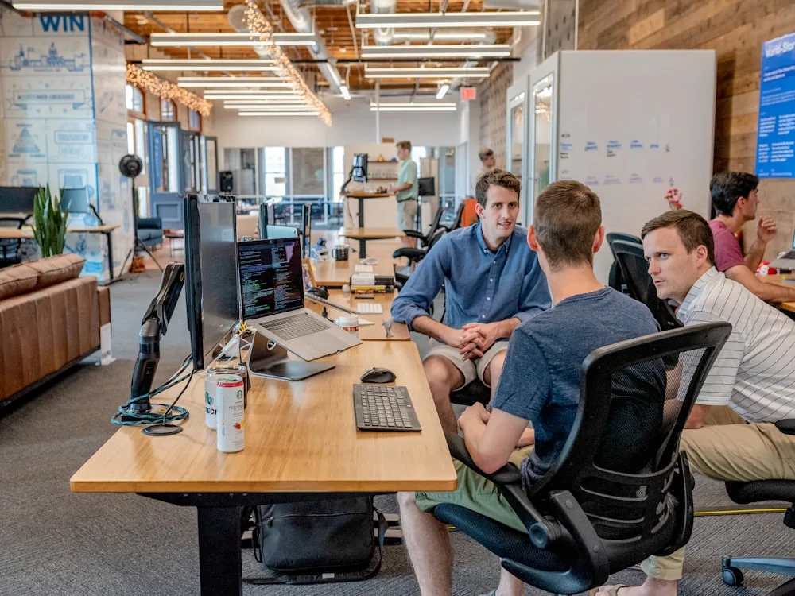

Stravia Financial Consulting was founded with a simple belief: growing businesses deserve finance that is as ambitious as the business itself.
We combine accounting expertise, strategic finance, FP&A, technology and business advisory to help organisations build stronger finance functions. Our role goes beyond preparing reports — we work with management to understand performance, identify risks, plan ahead and make better decisions.
We aim to become a long-term finance partner, not simply another service provider.
To make finance a source of clarity, confidence and competitive advantage.
To become a trusted global finance partner for ambitious businesses.
We take responsibility for outcomes, not just tasks.
We build relationships on transparency and trust.
We continuously improve the quality of our work and our clients’ finance functions.
We use technology intelligently to make finance better.
We work alongside management as an extension of the team.
Our success is ultimately measured by the value we create for our clients.
A Chartered Accountant with 9+ years of experience across accounting, FP&A, management reporting, financial modelling, finance transformation and strategic finance. He has worked with businesses across technology, SaaS, manufacturing, e-commerce, renewable energy and professional services, supporting stakeholders across India, the US, UK and Europe.
His experience includes building management reporting systems, developing financial models, improving finance processes, implementing accounting and ERP systems, developing SOPs, supporting fundraising and capital planning, and leading finance teams.
"Finance should not only tell management what happened. It should help management understand why it happened and decide what to do next."
Co-founder profile to be added once final details are confirmed — professional background, years of experience, industry exposure, areas of expertise, international experience and role within Stravia.

Many businesses have accountants, accounting software and financial reports. But fewer have a finance function that truly helps management make better decisions. Stravia brings together accounting discipline, strategic thinking, technology and ownership to create finance functions that grow with the business.
When you work with Stravia, you shouldn't feel like you have hired another external vendor. You should feel like you have added another experienced finance professional to your team — someone who understands the numbers and the business, asks the difficult questions, highlights risks before they become problems, and helps management make better decisions.
That is the Stravia approach.
Add an experienced finance partner to your team.
Start the Conversation